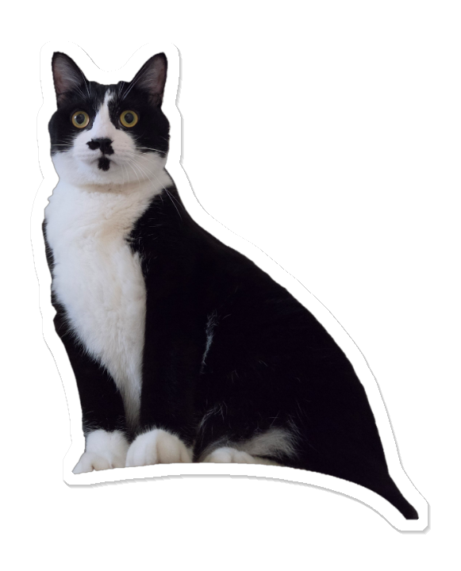
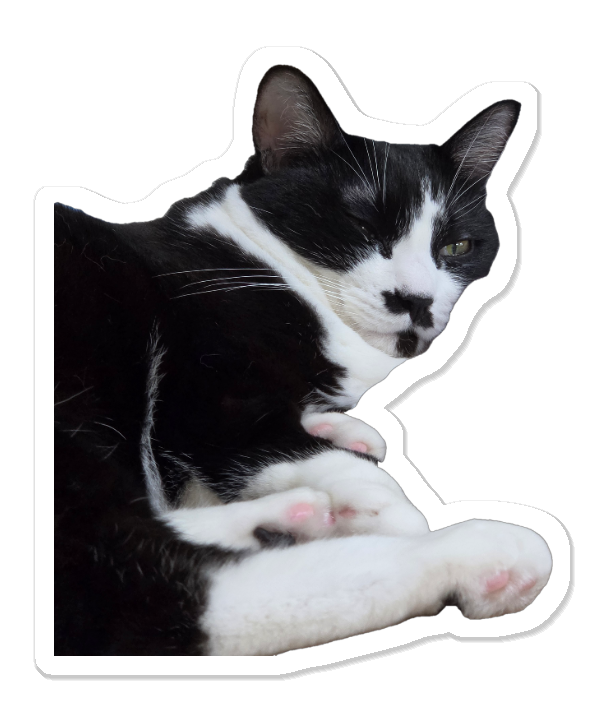
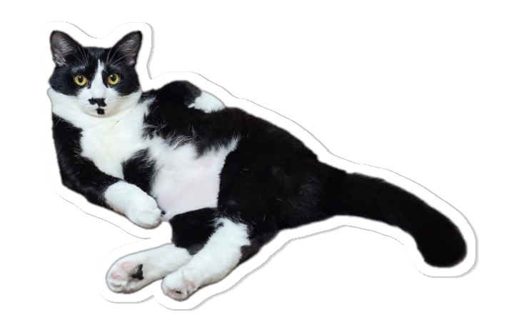
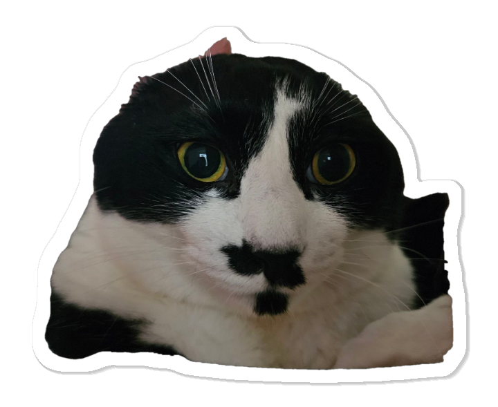
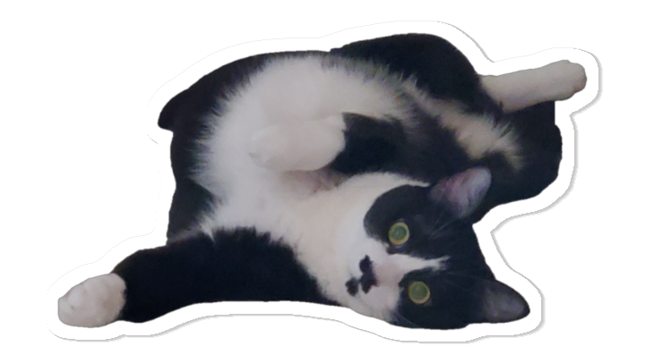
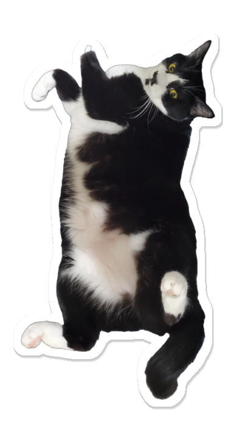
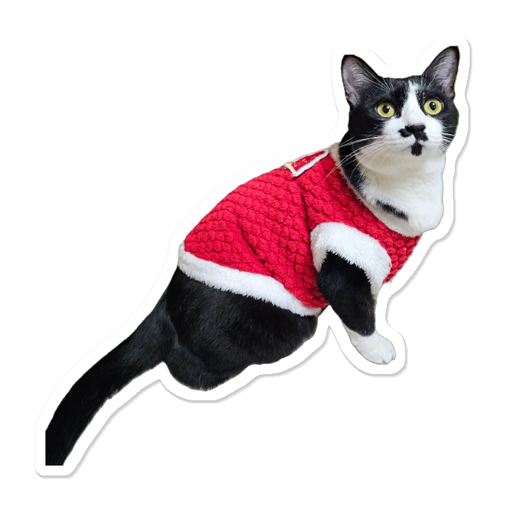

讀懂貓訊號・安心好相處
打破「自嗨嚕貓」的迷思！依據國際貓科醫學會 (AAFP/ISFM) 友善環境指引與農業部動保規範，專為初訪貓咖新手打造的互動指南。

黃金鐵律：把主控權徹底還給貓
為什麼懂得「安靜等待」的顧客，才是最受店貓歡迎的吸貓體質？
🏛️ 國際貓科醫學會 (Pillar 4) 核心三原則
-
1由貓發起 (Initiate)：安靜坐定，等貓的好奇心驅使牠主動走向你。
-
2由貓選擇 (Choose)：讓貓自行決定要磨蹭、待在你身邊，還是離開。
-
3由貓控制 (Control)：只要貓咪轉頭或身體移開，立刻停手給予空間。
⚖️ 法定紅線提醒：依據台灣《動物展演管理辦法》第 20 條，「嚴禁無正當理由追逐、捕捉或造成動物緊迫」。強抱、圍堵店貓均屬違法行為！

入店三道防線：保護店貓也保護你
進入貓咪的家，從守護環境氣味與衛生做起
1. 玄關更換室內拖
戶外鞋底容易帶有致命的貓瘟病毒 (FPV) 與寄生蟲卵。脫鞋換上消毒拖鞋，是守護店貓健康的第一道防線。
2. 清水洗手 20 秒
酒精乾洗手無法殺滅無外套膜病毒（如貓卡里西病毒）。使用無香精洗手乳徹底搓洗，避免身上殘留別家寵物氣味引發防衛。
3. 嚴禁氣味劇毒
薄荷醇（綠油精、萬金油）與柑橘精油對貓具有神經與肝臟毒性！入店嚴禁塗抹，且切勿給貓戴「柚子帽」。
新手初訪：知情同意測試 (Consent Test)
不強行伸手！簡單四步驟，做一隻貓認證的紳士訪客
🟢 綠燈：用臉頰主動蹭手指（釋放費洛蒙，同意互動）。
🔴 紅燈：轉頭或後退（拒絕觸摸，請立刻收手）。
摸貓地圖：甜蜜熱區 vs 絕對禁區
天大迷思破解：貓咪翻肚子，真的不是想被摸！
✅ 🟢 甜蜜熱區（高接受度）
• 下巴與臉頰兩側：布滿氣味腺體，貓咪最愛蹭手標記安全氣味。
• 頭頂與雙耳後方：平時自己舔舐不到的盲區，輕揉極具放鬆療癒效果。
❌ 🔴 絕對禁區（抓咬高發區）
• 小肚子（腹部）：翻肚代表「信任周遭環境」，絕非邀請你摸肚！伸手必引發四肢合抱撕咬反射。
• 肉球、四肢、尾巴：涉及逃跑敏捷度的防衛部位，抓握易受驚抓傷。

⚠️ 看到翻肚請「用眼睛欣賞」，千萬別伸手！讀懂微表情：緊迫與攻擊預警量表
貓咪從不無預警咬人！看懂這三大警戒訊號，及時收手

🚨 飛機耳 + 瞳孔擴大 = 極度警戒防衛狀態！黃燈警戒 尾巴甩動拍地
狗搖尾巴是興奮，貓尾巴急促抽動或猛拍地面代表「內心焦躁煩躁」！請立刻停止撫摸並縮手。
紅燈危險 飛機耳與瞳孔擴大
雙耳向兩側水平壓平（如右圖飛機耳），代表進入防衛反擊狀態；若伴隨哈氣、低吼，請安靜緩步後退。
迷思破解 呼嚕聲不一定等於開心
極度緊迫、身體疼痛時，貓咪也會藉由呼嚕震動進行「自我安撫」。需結合身體是否僵硬綜合判斷！
逗貓棒正確操作：獵物三部曲
為什麼你在貓咖甩逗貓棒像在做法，貓咪卻一臉冷漠？
🎯 模擬自然捕食循環 (Hunt, Catch, Kill)
-
1忽動忽靜：在桌腳或紙箱邊緣微動，模擬老鼠昆蟲在障礙物後躲藏。
-
2背向逃竄：真實獵物絕不會朝貓臉衝撞！讓玩具背對貓咪逃跑才激發撲抓。
-
3給予捕獲：務必讓貓咪咬住並用腳壓制實體玩具，獲得成就感。
❌ 嚴禁手指逗咬
避免貓將人手當獵物制約。
❌ 嚴禁雷射筆紅點
抓不到實體會引發嚴重挫折焦慮。

肉泥餵食技巧與桌面防貓禮節
美食當前全場暴動！如何安全餵食並守護桌上的咖啡蛋糕？
🥄 肉泥安全：務必使用專用小湯匙
• 嚴禁直接整條拿給貓啃咬：貓舌倒刺極易扯斷塑膠薄膜吞下，引發致命腸梗阻！
• 多貓分開輪流餵：依據五大支柱避免單點搶食，大貓激動扒手時立刻將湯匙放低遠離。
☕ 榻榻米矮桌防護守則
• 熱飲置中防燙傷：熱咖啡擺在桌內側，防止貓尾掃落燙傷人貓。
• 嚴禁用餐具逗貓：吸管、叉子被咬裂吞下極具危險。
• 離座隨手加蓋：防貓偷吃巧克力、洋蔥、高糖蛋糕引發急性中毒。

認識特殊體態品種與兒童同行守則
溫柔對待每一隻擁有獨特骨骼體質與年齡特性的店貓
蘇格蘭摺耳貓
天生帶有軟骨發育不全基因，關節易早期發炎疼痛。「大叔坐姿」是為了減輕骨骼壓迫，嚴禁拉扯其僵硬短尾或後腿。
曼赤肯 / 緬因貓
• 曼赤肯短腿：脊椎受力大，逗貓嚴禁自高處向下跳躍。
• 緬因貓：溫柔的巨人，手勁沉重，席地平視互動為佳。
兒童三不原則
知名貓咖普遍規範謝絕 4~6 歲以下、12 歲以下全程監護。
牢記「不尖叫、不奔跑、不強抱」，教導孩子用單指問候。
意外應變 SOP 與我們的人貓約定
愛牠，就用牠喜歡的方式對待牠！
🚑 不慎被抓咬傷的黃金處置 SOP
1. 切勿猛拉抽手：順推放鬆防止皮肉撕裂。
2. 流動清水+肥皂連續沖洗 15 分鐘：沖出多殺性巴斯德桿菌。
3. 優碘消毒包紮並通報店員：評估就醫防範貓抓病與破傷風。
🤝 新手訪客自律公約
尊重貓咪的休息權與隱私退路・關閉相機閃光燈・不強抱、不追逐・共同守護合法友善的展演福祉！

謝謝大家用心保護我們！🐾